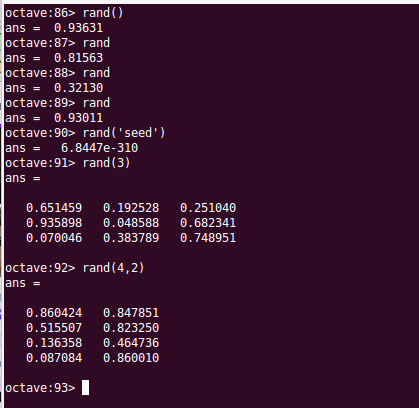

# funcioneslibreria.rst
Octave tiene una extensa librería de funciones predefinidas que abarcan numerosos campos de la ciencia matemática.
La función rand() se utiliza para generar numeros pseudoaleatorios. Se pueden generar scalares o matrices de números pseudoaleatorios. Si llamamos a la función sin argumentos nos devolverá un numeros pseudoaleatorios uniformemente distribuidos entre 0 y 1.
Si pasamos un número entero n como parámetro, la función nos devolverá una matriz cuadrada de dimensión n de numeros pseudoaleatorios comprendidos entre 0 y 1. Si le pasamos dos números enteros m y n la matriz resultante tendrá m filas y n columnas.
El numero que está utilizando Octave como semilla generadora de los números pseudoaleatorios se puede ver con rand(‘seed’). También podemos modificar la semilla con rand(‘seed’, x), donde x es la nueva semilla que queremos utilizar.
Los números generados por rand() son doubles comprendidos entre 0 y 1. Si queremos generar números comprendidos en un determinado intervalo debemos operar los números obtenidos de rand() para adaptarlos al intervalo buscado:
M = 1
rand() + M
% El resultado estará comprendido entre M y M+1 (en este caso entre 1 y 2)
%
M = 10
rand() * M
% El resultado estará comprendido entre 0 y M
%
A = 10
B = 20
A + (B-A)*rand()
% El resultado estará entre A y B
Para generar numeros enteros en un determinado intervalo se puede utilizar la función randi():
randi(10)
% Genera un número entero entre 1 y 10
También se pueden conseguir enteros mediante la función rand():
A = 10
B = 20
round(A + (B-A)*rand())
% El resultado será un entero (double con parte decimal cero) entre A y B
int32(round(A + (B-A)*rand()))
% El resultado será un entero int32 entre A y B
{kind=link}